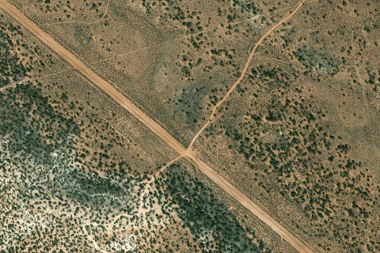

Boulder / New Home Bench
BOULDER · UT

Aerial imagery source: Esri, Vantor, Earthstar Geographics, and the GIS User Community
| Identifier | BOULDER |
|---|---|
| State | UT |
| Runway length | 3,500 ft |
| Runway width | 60 ft |
| Surface | Dirt |
| Runway | 14/32 |
| Elevation | 6,787 ft |
| Ownership | usfs (nw) / blm nm (se) |
| CTAF | 122.9 |
| Coordinates | 37.8855, -111.4634 |
Notes
[ubcp] The Boulder Airstrip is located just a few miles from the town of Boulder Utah, near the intersection of State Route/Scenic Byway 12 and Hell's Backbone road. Hell's Backbone Grill in the town is possibly the best farm-to-table experience in all of Utah. This entire area, stretching from Boulder Mountain toward Capital Reef, is filled with spectacular scenery and wonderful flying opportunities. There is no ground transportation available at all in the town, so ground crew support will be important if you wish to visit the Grill or any of the other restaurants there. There is nice hiking and rudimentary camping available at the airstrip, but bring your own water and pack out your own waste. The southeast end of the runway can be accessed by car from SR 12. A longer, but easier-to-find track leads from the Hell's Backbone road to the middle of the runway. The airstrip is also the trailhead for the Old Mail Trail that lead from the town of Boulder to Escalante. Because of this, the runway is heavily rutted from vehicular use. Due to rising terrain to the northwest, there is no takeoff or go-around opportunity in that direction for most airplanes. Generally, landing to the northwest and takeoff to the southeast will be preferred. Approaching from the southeast, the first 500 feet of the runway is very rough and rocky, making it unsuitable for aircraft without big bush tires. The next section up to the midpoint is probably the least heavily rutted, but the area around the midpoint (where the track from Hell's Backbone road intersects) has very deep ruts. If landing on the southeast end it is advisable to get stopped before the midpoint. It is also possible to land beyond the midpoint on the northwest half of the runway, where it is fairly easy to stop due to the uphill grade. That section also is rutted, but it has been done successfully on 850 tires. Takeoffs normally start straddling the ruts on the northwest end, rolling downhill, with the intent to be airborne well before the midpoint. It is all but impossible to avoid the ruts entirely. In high performance aircraft a takeoff could possibly be initiated from the midpoint, toward the southeast. The fuselage of a wrecked airplane stuck on its nose serves as the base of the windsock mast, but the windsock itself is often in disrepair. Perhaps the wreck also serves as a warning to those not fully prepared for the challenges of this interesting strip!